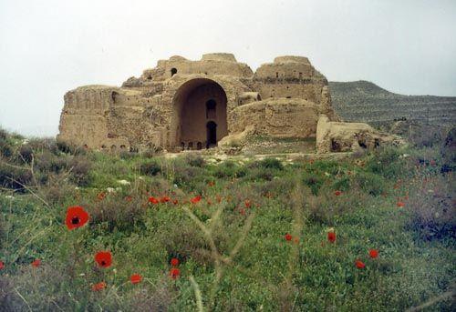
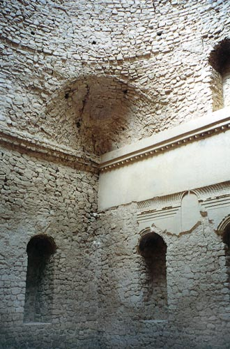
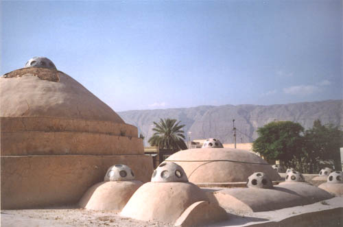
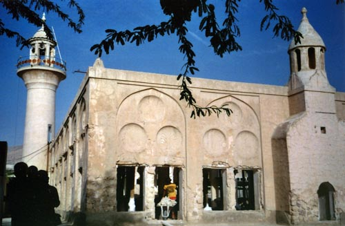
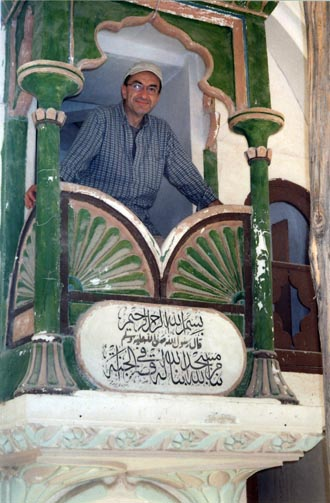
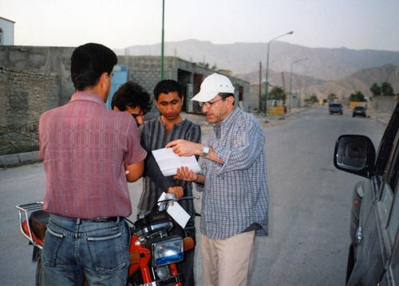
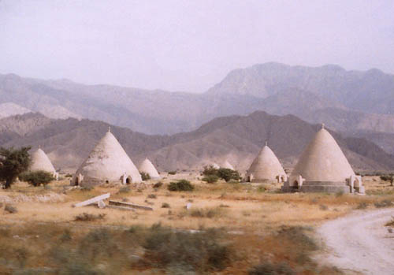

Copyright © Ali Parsa 1998-2011
All rights reserved
In March 2007 we did a trip to three of the southern Iranian provinces, namely Fars, Hormozgan and Bushehr. In Hormozgan we visited the village of Kukherd, made famous by my unseen friend Mr. Mohammayan through his numerous articles in the Persian Wikipedia. He is from Kukherd and lives in the UAE. When asked by Ramin Kotobi for an idea for a Norouz trip, I instantly said we should go to Kukherd because I have read his articles about the area in Wikipedia, and I was curious to visit there. There were seven of us with two SUVs. Mr. Mohammadyan was kind enough to introduce us to his many friends in Kukherd and we were in good hands there. Here are some pictures, taken by a cheap, old camera, legacy of the schoolgirl days of my two daughters.
Ardeshir's Palace On our way to Hormozgan, we spent the first night by the magnificent palace of Ardeshir Babakan, the founder of the Sassanid empire, near the city of Firouzabad. |  |
 | Squinch |
| Bastak Bastak is a historic city to the south of Lar, in Fars Province. This is the old bath of Bastak. |  |
|  | The cute old jame' mosque of Bastak. Unfortunately the roof has collapsed and because they have a new mosque in Bastak, this beautiful building shows signs of neglect. The building looks like a church to me. |
| Ali Parsa, playing the preacher in the unique altar of the mosque. |  |
|  | Kukherd Arriving in Kukherd, I am presenting a copy of Mr. Mohammadyan's email to his friends. |
| Berkeh, or water reservoir, is a common landmark in south Iran. These are traditional structures to gather rain water for consumption. |  |

Copyright © Ali Parsa 1998-2011
All rights reserved